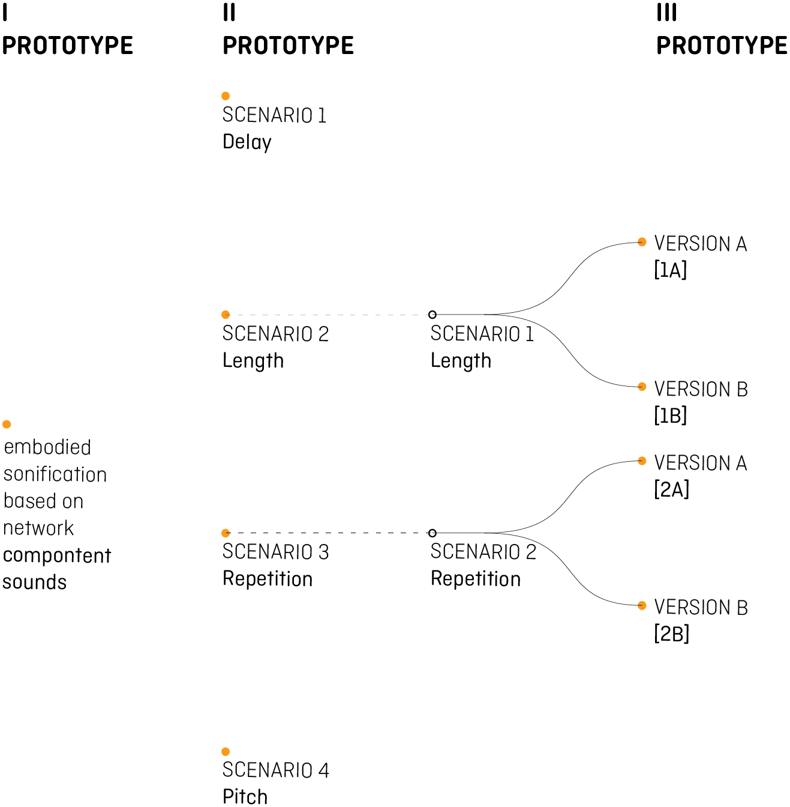

This website is build in support to the research:
UNDERSTANDING CYBER ATTACKS ON WATER SUPPLY SYSTEMS.
AN EXPERIMENTAL APPROACH TO THE SONIFICATION OF PROCESS MONITORING BASED ON ANOMALY DETECTION ALGORITHM.
AN EXPERIMENTAL APPROACH TO THE SONIFICATION OF PROCESS MONITORING BASED ON ANOMALY DETECTION ALGORITHM.
Here is possible to hear the sound described in the paper.
The Project is based on three different Prototypes wich correspond with the step we followed to define the final one.
Diagram shows these steps: we select our first sounds in accordance with the Embodied Approach, each network components is represented by a sound which try to evocate the original noise. The duration of the sonification is around 2 minutes, because of that it has been jundge too long. So, we change our approach and we proeceed gathering all the componentes in 5 districts, based on their geographical distribution. For the Second Prototype we proposed 4 different Scenarios based on sound structure. At the end, for the third Prototype, we select two Scenario from the previous ones. We applied to each of them two different kind of sound, one musical and one noisy, to obtain the final Prototypes to test.

The Project is based on three different Prototypes wich correspond with the step we followed to define the final one.
Diagram shows these steps: we select our first sounds in accordance with the Embodied Approach, each network components is represented by a sound which try to evocate the original noise. The duration of the sonification is around 2 minutes, because of that it has been jundge too long. So, we change our approach and we proeceed gathering all the componentes in 5 districts, based on their geographical distribution. For the Second Prototype we proposed 4 different Scenarios based on sound structure. At the end, for the third Prototype, we select two Scenario from the previous ones. We applied to each of them two different kind of sound, one musical and one noisy, to obtain the final Prototypes to test.